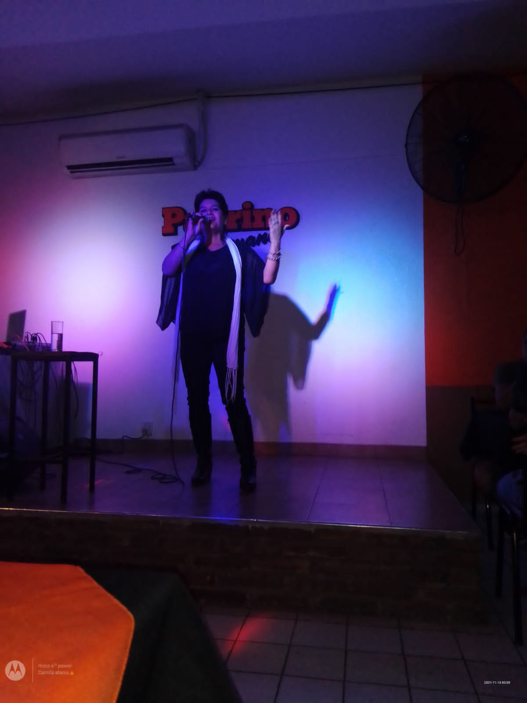
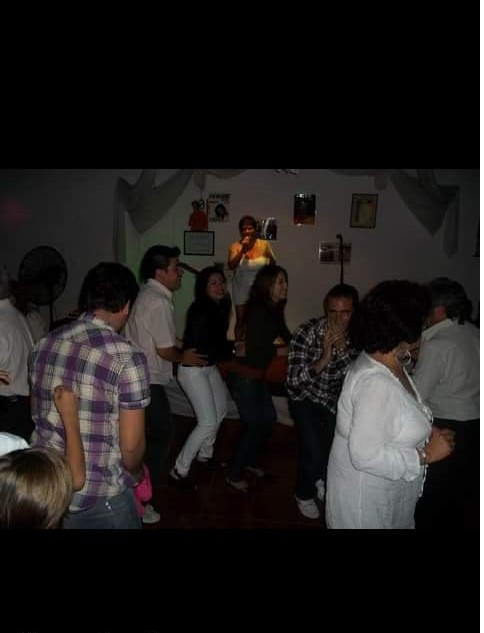
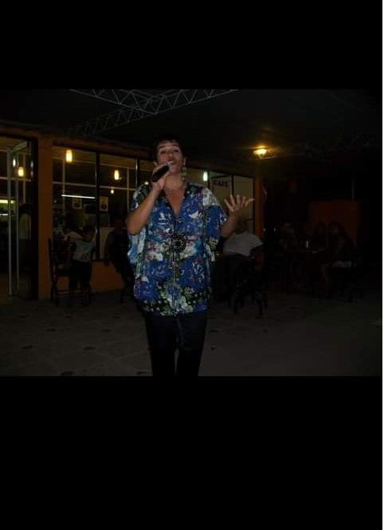
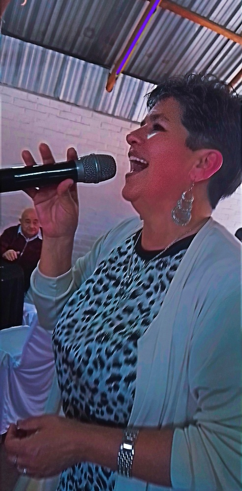
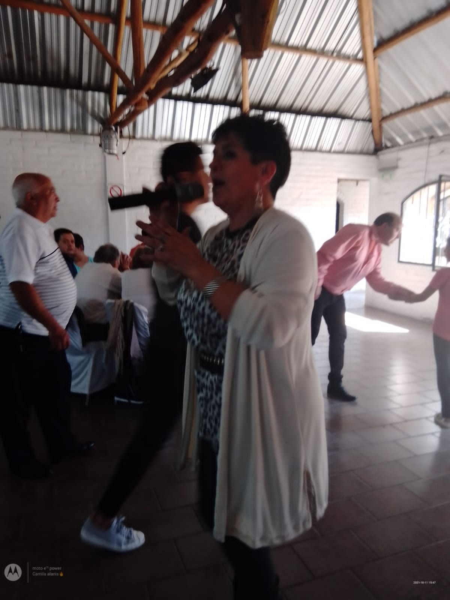
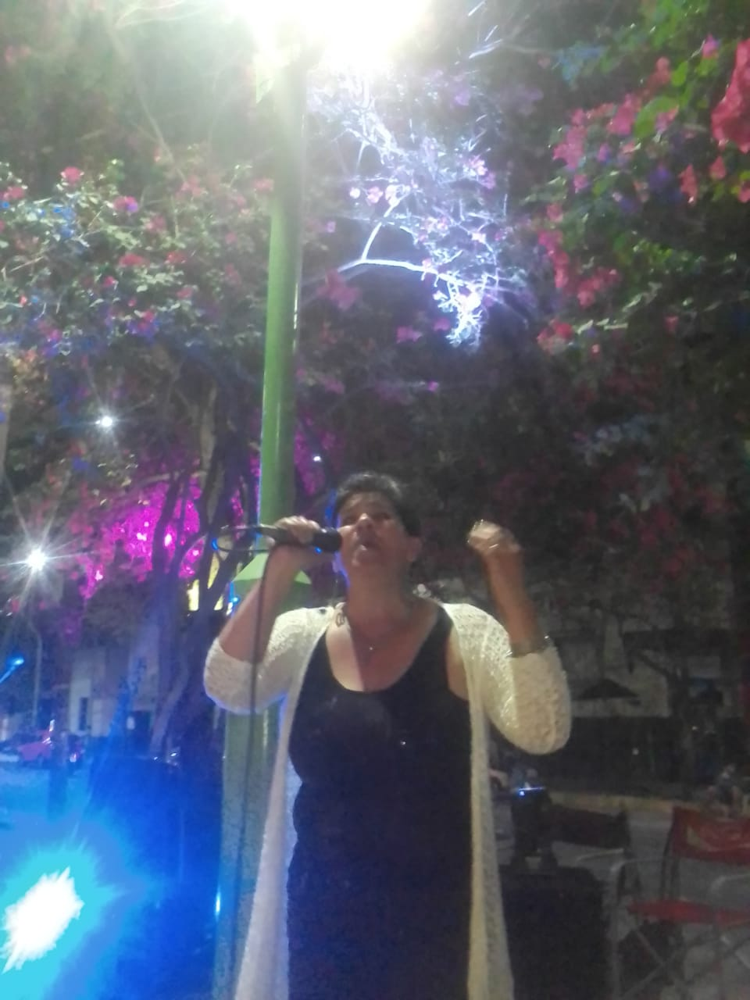

Mabel Alaniz

Artista Profesional
¿Quién Soy?
Soy Mabel Alanis, artista mendocina con amplia trayectoria.
Comencé mi carrera en el año 1997 con el dúo " Gotas de lluvia" durante 7 años, en el 2004 incursioné como solista ganando al año siguiente el premio Escenario a la .mejor voz melódica




Variados


Trayectoria

melódico, tango, boleros, pop latinos, folcklore, mexicano, bailable cumbia y cuarteto

Festival del melón y la sandía 2010,Lugares de show San Francisco, El amasiji,Caro Pepe, El galpón, Zeus, Al fin, El gavilán, teatro plaza, teatro imperial
Café de la plaza en La Rioja, IRANZO pocitos San Juan, El indio resto bar potrero de los Funes, San Luis,actuó como solista y en dúo con el Sr. Martín Mercado, DÚO QUE2